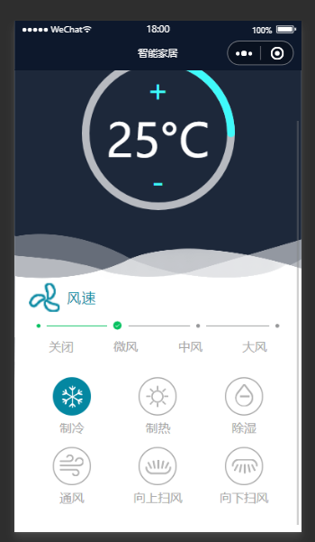
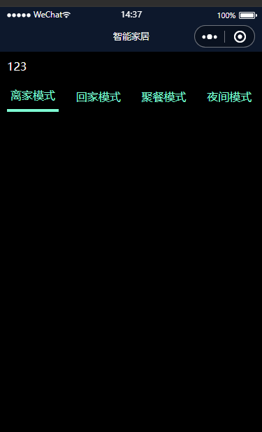

# 使用三元表达式给 data 赋值
效果要求：
点击切换不同的图片。图片是数据里面渲染出来的。效果如图：

view 代码
<view class="model"> <view class="item" wx:for="{{model}}" wx:key="id" bind:tap="model" data-list="{{index}}"> <image class="model_img" src="{{item.active ? item.src : item.url}}"/> <text class="model_title">{{item.title}}</text> </view> </view>js 代码
active: index}实现原理：
在需要渲染的 view 里面先
wx:for循环，给每一个 view 绑定一个点击事件。在自定义一个属性data-list="{{index}}"这个自定义值不是数组的下标。在数组中添加一个属性名为 active 的属性。值为布尔类型。true 和 false 都可以。看自己的选择，在图片的 src 属性上使用三元表达式：src="{{item.active?item****.****src** **:** **item****.****url**}}"这里不要漏掉=和""双引号。判断数组里面的 active 的值，如果为 true，则图片路径为第一个，反之则为第二个。数组里面保存的是两个图片的路径，页面只保留一个图片的路径用做计算三元表达式的值即可。在 js 中，声明一个变量来接受刚才在 view 里面自定义的属性。
const list = e.currentTarget.dataset.list，使用 forEach 循环数组。用循环出来的 index 和自己定义属性值对比，如果相等，证明点击的就是当前数组中的[index]某一项。这时候在声明一个变量i来接受当前数组中每一项的（这里用 index 代表每一项）active 属性值。这时候。i 取反，再赋值给数组里面的 active（就是刚才声明的 i）。
# 小程序中的父传子
父组件（页面）向子组件传递数据，是通过标签属性的方式来传递的。
以下代码表示，向子组件
iuiu中传递数据，在父组件的 WXML 中，list 是标签名，传递当前 wxml 的 js 文件中的list数组，<iuiu list="{{list}}"></iuiu>在子组件的 js 文件中，在
properties中接收父组件传递过来的数据
}
list是父组件中传递过来的标签名。type，类型：Arrye、String、Number、Boolean、Object、null（表示任意类型）
value可以给定初始值，可以默认为空。
# 小程序中的子传父
子组件向父组件传递数据，是通过事件的方式传递的。在子组件中绑定的方法中声明一个变量，把需要传递的值赋值给这个变量，在通过
this.triggerEvent这个事件传递给父组件.
}}触发父组件中的自定义事件，同时传递数据给父组件。
this.triggerEvent("父组件自定义的名称","要传递的参数")例如：上面的子组件传递的方法名为
itemChange，那么父组件中因该这么写:<iuiu list="{{list}}" binditemChange="dianji"></iuiu>
bind+方法名=父组件中需要定义的函数名称。
}这里需要注意的是，传过来的值不是在
e.currentTarget.dataset之中，而是在e.detail中。
# 组件中的插槽使用
slotslot 标签，其实就是一个占位符，插槽。等到父组件调用子组件的时候，再传递标签过来，最终，这些被传递过来的标签就会替换 slot 插槽的位置。
效果图如下：

点击不同的导航，切换到不同的插槽。
子组件wxml代码：<view class="content"> <slot></slot> </view> <view class="box"> <block wx:for="{{list}}" wx:key="id"> <view bindtap="hangent" data-index="{{index}}" class="item {{item.active?'isactive':''}}">{{item.name}}</view> </block> </view>
子组件js代码
}}}
父组件中wxml代码<iuiu class="ii" list="{{list}}" binditemChange="dianji"> <block wx:if="{{list[0].active}}">123</block> <block wx:elif="{{list[1].active}}">456</block> <block wx:elif="{{list[2].active}}">789</block> <block wx:else>否则显示</block> </iuiu>
父组件中js代码
]}以上的插槽是配合组件间的传值使用的。
# 在小程序中截取字符串
直接在需要截取的变量后面点
substring（）小括号里面放需要截取的开始位置和结束位置下标从 0 开始。。